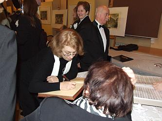

do aktualności
do aktualności2014-02-01
Jesteśmy już na miejscu. Tego jeszcze nie doświadczyliśmy, naszą garderobą jest sala muzealna :) a może jesteśmy eksponatami? Panowie „kombinują”, panie przebierają się w „ciuszki camerackie”.
A! panie też kombinują . . . nowe lakierki na występ, pasują kolorystycznie do „zeberak” a jak wygodnie by się stało na koncercie. Warto pomyśleć ?
Ale póki co, wskakujemy w nasze galowe czółeneczka. Gniotą, ale ślicznie się prezentujemy i jaka noga w tych butkach ha!
Wszyscy gotowi, więc schodzimy po cichutku (bo jeszcze trwa wykład). Panowie wykorzystują czas na odpoczynek a dyrygentka wpisuje się do Księgi Pamiątkowej.

Jeszcze chwila oczekiwania
i zaczynamy. Chór zaprezentował różnorodny i bardzo bogaty repertuar. Koncert rozpoczęto od pastorałek.
Teraz krótkie wprowadzenie do pieśni ludowych przygotowane przez naszego basa Kazia Nowaka (który jest etnografem),
no i pieśni ludowe, znane utwory operowe oraz fragmenty operetek i musicali. Na koniec chór odśpiewał kolędę „Bóg się rodzi” z całą salą, którą (równocześnie z chórem) dyrygowała dyrygentka Izabela Szota. O bardzo wysokim poziomie artystycznym występu świadczy fakt, iż owacji na stojąco, jaką chórowi zgotowała publiczność, nie było końca.
Na zakończenie podziękowania, kwiaty i radosna atmosfera.
Krótkie podsumowanie koncertu i wracamy zadowoleni do Wieliczki.
do aktualności

 Prowadzenie strony: Małgorzata Wysocka-Cebula
Prowadzenie strony: Małgorzata Wysocka-Cebula